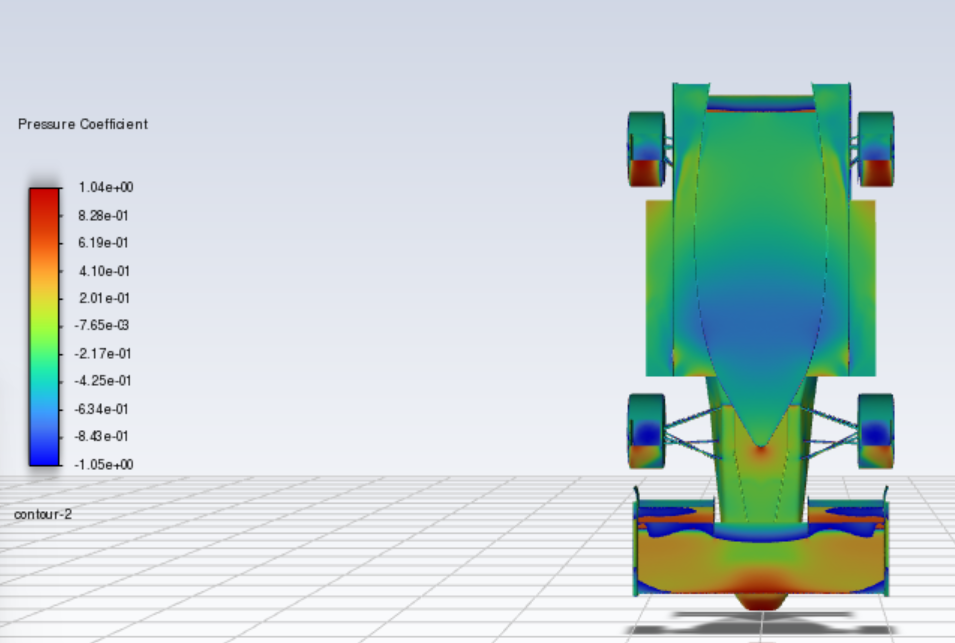
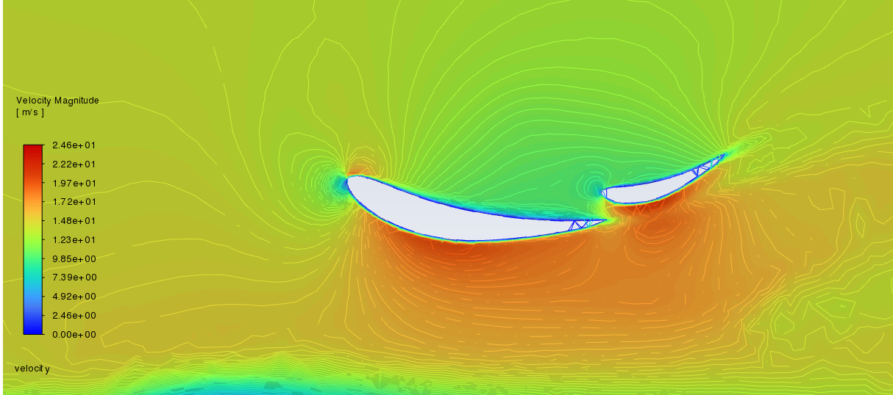
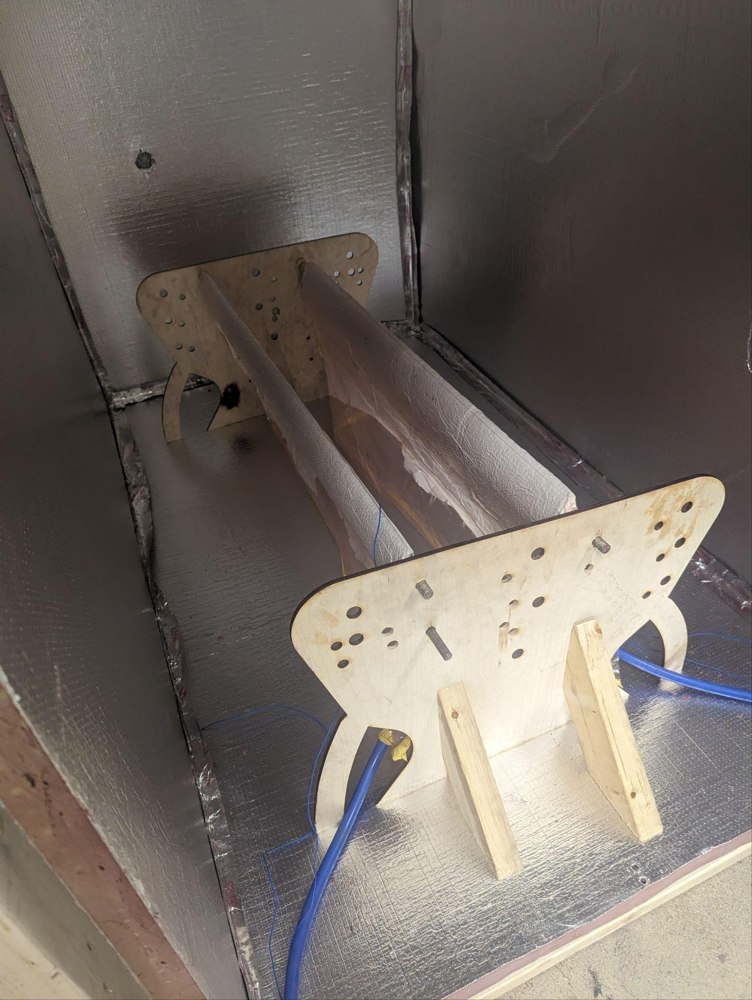
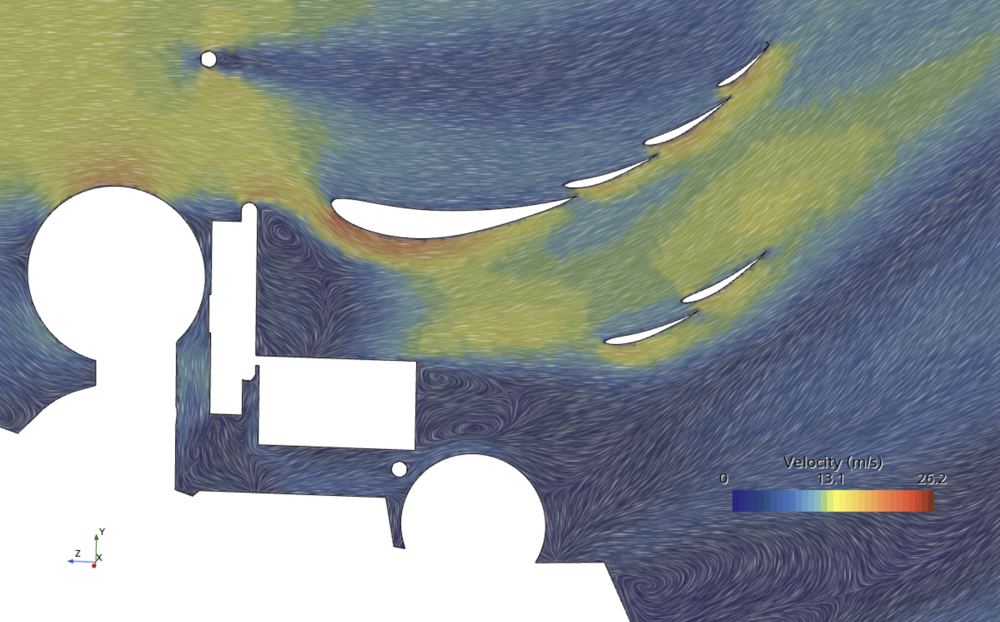
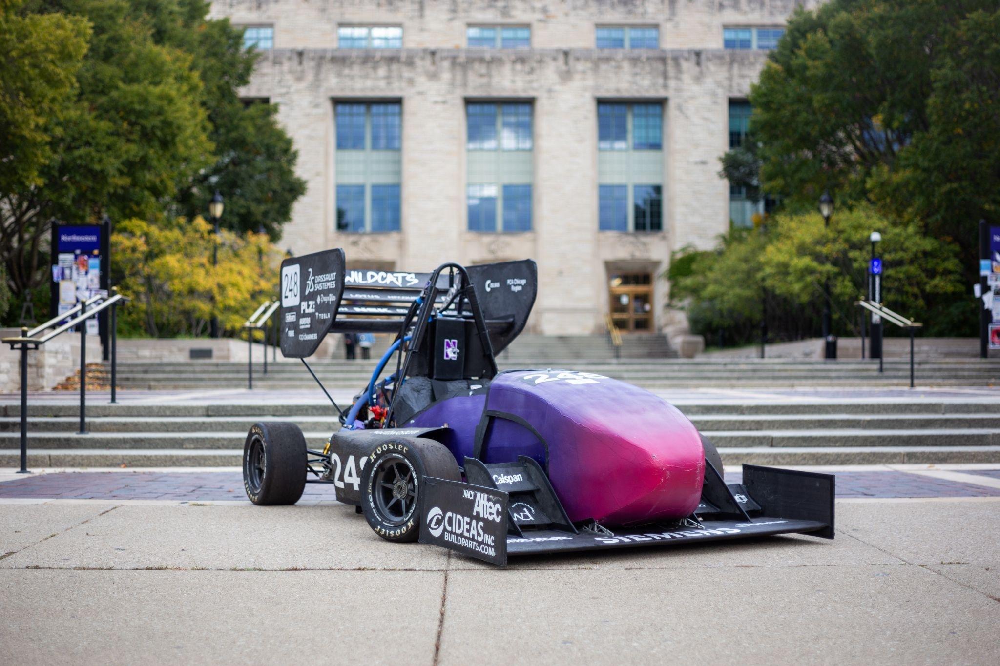
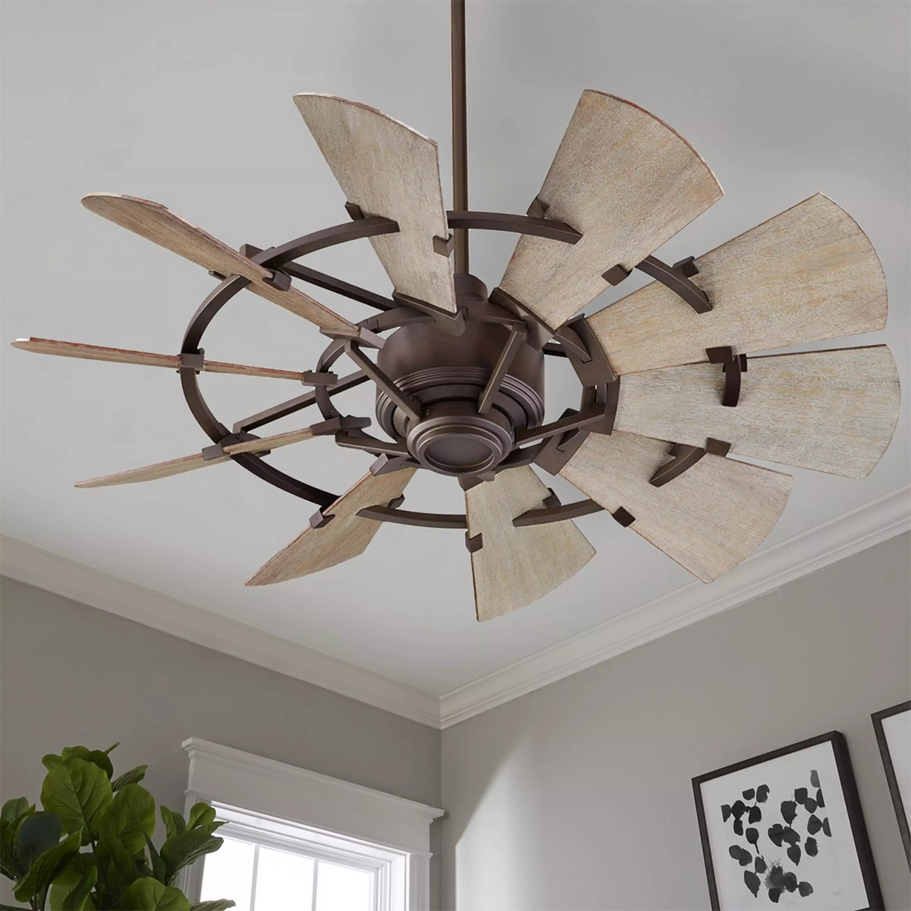
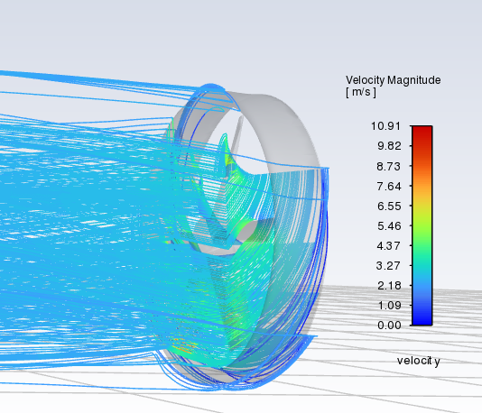
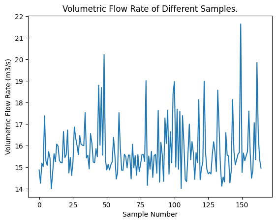

Engineering Projects
Detailed portfolio of engineering projects spanning aerodynamic CFD optimization, CAD/CAM manufacturing, mechatronics, structural FEA analysis, and PyTorch machine learning.
Aerodynamics & Computational Fluid Dynamics (CFD)
Aerodynamics Package & Full-Car CFD Aero Mapping
June 2024 – June 2025Role: Aerodynamics Lead | Northwestern Formula Racing SAE
- Led an 8-person engineering team to design, manufacture, and test a full aerodynamics package for the Formula SAE car.
- Executed over 100+ hours of 3D Ansys Fluent CFD simulations across varying vehicle pitch, roll, and yaw angles to generate a comprehensive aerodynamic map.
- Researched and implemented advanced carbon fiber curing techniques and optimized mold materials, reducing total manufacturing time by 25%.
- Secured $15,000 in financial and in-kind corporate sponsorships to fund team manufacturing operations.




Rear Wing Redesign & Tire Wake Management
June 2023 – June 2024Role: Rear Wing Design Engineer | Northwestern Formula Racing SAE
- Redesigned the rear wing assembly according to 2024 FSAE regulations, achieving over 10% drag reduction for improved endurance race efficiency.
- Ran extensive 3D CFD simulations in Siemens Star CCM+ to optimize airfoil configurations and minimize turbulent tire wake penalty.
- Conducted rigorous mesh validation metrics including Face Validity, Cell Quality, Cell Skewness Angle, Volume Change, and Chevron Quality.


Shrouded Fan Aerodynamic Bayesian Optimization
January 2025 – March 2025Role: Analysis Engineer | Engineering Optimization Project
- Formulated and solved a high-dimensional aerodynamic optimization problem to maximize volumetric airflow for a shrouded fan system.
- Parameterized fan geometry with 10+ design variables (airfoil shape, hub dimensions, blade count, angle of attack, twist).
- Automated CAD-to-CFD pipeline by integrating SolidWorks API with ANSYS Fluent via Python scripts.
- Developed a Gaussian Process surrogate model (Matérn kernel) with Bayesian Optimization (Expected Improvement) to achieve ~21.6 m³/s peak airflow.



Airspeed Sensors Printed Circuit Board (PCB)
June 2025 – June 2026Role: Electrical / Aero Engineer | Northwestern Formula Racing SAE
- Designed custom airspeed sensor Printed Circuit Board (PCB) in Altium Designer to measure real-time air velocity around the race car chassis.
- Enabled physical correlation validation between wind tunnel / track data and Computational Fluid Dynamics (CFD) simulations.
CAD, Structural Analysis & Mechanical Systems
50m Tower Crane Structural & Buckling Analysis
April 2025 – June 2025Role: Structural Engineer | Kellogg Crane Design Project
- Designed a 50 m tower crane structure to lift a 25-tonne load, strictly adhering to ASME B30.3, EN 14439, and DIN 15018-1 standards.
- Modeled column and boom structures in SolidWorks using optimized truss configurations for maximum stiffness-to-weight ratio.
- Simulated loading in ANSYS (hook load, 100 mph wind, -27°F to 105°F thermal loads), confirming peak stresses stayed below 360 MPa yield limit for St 52-3 steel with ~20% safety margin.
- Validated critical buckling stability analytically with Euler buckling load capacity exceeding 52×10⁶ N.


Three-Shaft Gear Transmission System
September 2024 – December 2024Role: Design Engineer | Theory of Machines Class Project
- Designed a 3-shaft gear transmission transmitting 60 kW power from 2700 rpm input to 400 rpm output (actual: 399.94 rpm, ~6.75:1 reduction ratio).
- Modeled gears, shafts, bearings, and spacers in SolidWorks ensuring compact assembly layout (total centerline distance AC = 405 mm).
- Calculated bending moment, torque, and fatigue life for AISI 1020 steel, achieving Goodman fatigue safety factor 2.35 (Shaft 1) and minimum AGMA gear fatigue FoS 1.15.
- Selected SKF 6309 and 6410 deep groove ball bearings predicting >2350 million cycles operating life (>5 years continuous service).


FSAE Differential Mounts Topology Optimization
September 2022 – June 2023Role: Drivetrain & FEA Engineer | Northwestern Formula Racing SAE (NFR23)
- Designed new 7075-T6 aluminum differential mounting brackets for Formula SAE electric vehicle powertrain transition.
- Achieved 47.3% total weight reduction (2.45 lbs down to 1.29 lbs) using SolidWorks Topology Optimization.
- Executed Finite Element Analysis (FEA) under 9,987 N peak chain tension load, securing structural factor of safety > 1.5.
- Programmed CAM in Fusion 360 and machined components in-house using a 3-axis Haas CNC mill.


Manufacturing Processes, CNC & Rapid Prototyping
CNC Mouse Component Design & Haas VF-2 Manufacturing
March 2026 – June 2026Role: Manufacturing Engineer | DSGN 345 Process Development
- Designed a 3D computer mouse component in Siemens NX featuring organic revolved surfaces and pocket features optimized for 3-axis CNC milling.
- Configured CAM setup in Siemens NX CAM for 6061-T6 aluminum (4" x 4" x 2.6"), generating toolpaths for Cavity Mill Roughing, Cavity Mill Finishing, and Complex Area Surface Milling.
- Calculated feeds, speeds (6,112 RPM for 1/4" ball end mill), and step-over parameters (33.3%), achieving a 0.001" scallop height surface finish.
- Machined the part on a Haas VF-2 3-axis CNC mill using edge finder WCS zeroing, 2" gauge block tool length offsets, and zero-collision clearances within a 5-hour window.


Google Pixel 7 Custom Multi-Material Phone Case (DfAM)
May 2026 – June 2026Role: DfAM & Product Engineer | DSGN 348 Rapid Prototyping
- Reverse-engineered Google Pixel 7 dimensions (155.6 x 73.2 x 8.7 mm) using precision calipers and constructed surface geometry in SolidWorks.
- Applied Design for Additive Manufacturing (DfAM) principles to integrate custom embossed Botswana graphics and a snap-on fidget axial fan accessory.
- Manufactured 3 prototyping iterations using FDM (Prusa MK4 flexible TPU) and SLA (Formlabs Form 4/4B in Tough 1500 and Tough 2000 resins).
- Conducted structured ergonomic user testing with 5 participants to optimize power button travel and fan clearance.


Plastic Injection Molding Aluminum Mold Tooling
Winter 2025Role: Mold Tooling & Manufacturing Engineer | ME 340-2 Injection Molding Project
- Designed 4 aluminum mold halves (Core & Cavity pairs) in Siemens NX for a modular polypropylene Among Us character with interchangeable accessories.
- Adhered strictly to DfIM rules: 0.075" uniform wall thickness, 2.0° draft angles, 0.0035" interference press-fit calculation (60% yield stress limit).
- Programmed CAM toolpaths in Siemens NX and machined mold plates on a 3-axis Haas Mini Mill 2; reamed dowel holes to 0.125" for precision press-fit pins.
- Optimized injection parameters (487°F/2750 psi for Front/Mustache; 500°F/3750 psi for Back/Hat) to eliminate short shots and flash.


Mechatronics, Embedded Control & Thermal Systems
Closed-Loop Motor Control System
January 2025 – March 2025Role: Mechatronics Engineer | Introduction to Mechatronics
- Built a closed-loop brushed DC motor controller featuring dual PID feedback loops running at 200 Hz (position) and 5 kHz (current).
- Integrated PIC32 microcontroller, INA219 current sensor, DRV8835 H-bridge, and I2C/UART interfaces to Raspberry Pi Pico.
- Programmed control algorithms in C++ and Python using interrupt-driven PWM duty cycle regulation.
Line-Following Ball Kicking Robot
March 2023 – June 2023Role: Robotics Engineer | DSGN 360 Design Competition
- Engineered an autonomous robot featuring a water wheel-inspired kicking mechanism to score soccer goals.
- Fabricated a 3mm laser-cut acrylic chassis with tessellating structure and custom 3D-printed PLA wheels.
- Implemented phototransistor IR line-tracking and programmed the Teensy 4.0 microcontroller in C++.
Captive Water Window Thermal Cooling System
September 2025 – March 2025Role: Analysis Engineer | Capstone Design Project
- Researched and modeled water-filled window technology for residential building cooling using aquifer water sources.
- Performed free/forced convection heat transfer calculations and built MATLAB system thermal performance models.
- Designed DAQ data logging hardware with Raspberry Pi Pico 2, MAX6675 Type K thermocouples, and Hall Effect flow sensors.
Machine Learning & Materials Characterization
FSAE Tire Force Prediction via PyTorch Neural Networks
March 2026 – June 2026Role: ML Engineer | Machine Learning Class Project
- Developed a PyTorch Multi-Layer Perceptron (MLP: 14 → 32 → 32 → 32 → 1) to predict Formula SAE tire lateral force from 14 operating variables.
- Preprocessed 210,000+ experimental tire test samples, filtering break-in noise and preventing data leakage.
- Achieved 97.8% prediction accuracy (R² = 0.9776) on unseen test data, outperforming traditional Pacejka empirical models.
Atomic Force Microscopy (AFM) Surface Metrology
March 2026 – June 2026Role: Experimentalist | Nanotechnology Research Project
- Investigated tempered glass manufacturing using Atomic Force Microscopy (tapping & contact/lateral modes).
- Processed 256x256 pixel dataset in MATLAB to compute surface roughness (Rq, Ra, Rz) and local variance maps.
- Discovered anti-glare glass exhibited 8.7× greater RMS surface roughness and 5.22× higher friction variance due to chemical etching.